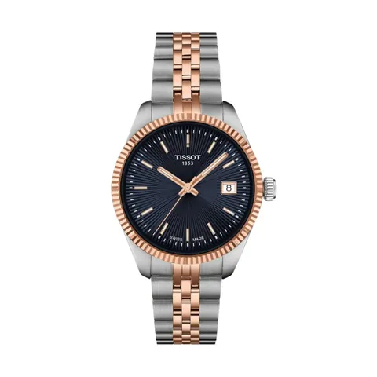
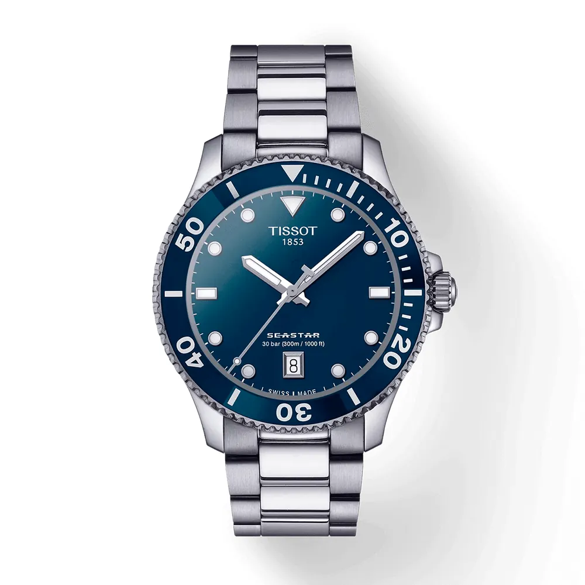
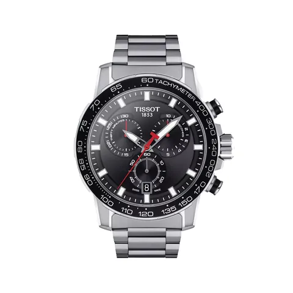
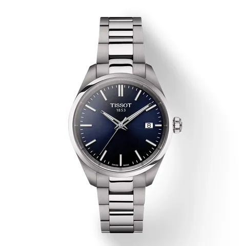
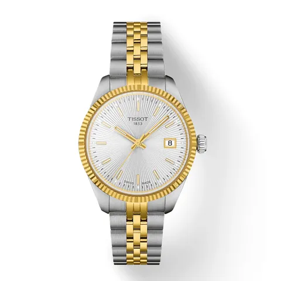

TissotT1562102204100

Tissot
TISSOT SEASTAR 1000 40MM
Ref. T120.410.11.041.00 Caja de 40 mm de diámetro
Desde el primer momento hasta el uso cotidiano, el Seastar 1000 Quartz de 40 mm irradia sofisticación, funcionalidad y adaptabilidad. Cada reloj de esta línea representa una combinación equilibrada entre elegancia y tecnología, reflejando la maestría relojera suiza y un diseño atemporal. Su caja de 40 mm , altamente versátil, está pensada para quienes buscan un reloj refinado y con carácter, capaz de acompañarles sin esfuerzo del día a la noche, sin sacrificar el rendimiento técnico.
Al igual que sus versiones en 36 mm y 45,5 mm , estos modelos deben su nombre a su notable estanqueidad, con una resistencia al agua de 1.000 pies (30 ATM / 300 metros) . Incorporan biseles giratorios unidireccionales que permiten medir con precisión el tiempo bajo el agua. Además, las agujas e índices están tratados con Super-LumiNova® , asegurando una visibilidad óptima incluso en ambientes con poca luz. Gracias al sistema de cambio rápido de correas de Tissot , el usuario puede personalizar fácilmente su reloj, eligiendo entre una variedad de correas compatibles según la ocasión o su estilo personal.
Precio y disponibilidad, en la joyería.Te lo confirmamos por WhatsApp o sentados en la mesa.

TissotT1562102204100

TissotT125.617.11.051.00

TissotT150.210.11.041.00

TissotT156.210.22.031.00